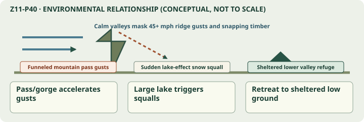

Z11-P40 · Navigation, weather and rescue · New manuscript
Recognize terrain wind funneling, ridge gusts and lake-effect squalls
Anticipate severe localized wind acceleration and sudden snow/rain squalls created by passes, valleys and large lakes.
When it applies · Mountain passes, canyon gaps, forested ridgelines and Great Lakes or large-lake shorelines.
Equipment · Forecast, windproof layers and sheltered alternate route options.

Actions
- Recognize that wind accelerates dramatically when funneled through narrow mountain passes, river gorges and open ridge saddles—calm air in a sheltered valley can mask dangerous gusts just 300 feet higher.[E16, N06]
- Watch large lakes (such as Lake Superior and large Upper Midwest basins) where cold air crossing warmer open water generates sudden localized lake-effect snow squalls that erase visibility within minutes.[N06, N07, E25]
- Inspect downwind shorelines and forested ridges closely for snapping limbs and steep choppy waves before stepping onto exposed bluffs or launching craft.[E13, E16, X06]
Failure recognition · Leaving wind shells packed at the bottom of a bag in a calm valley trailhead, then hitting 45-mph freezing gusts at an exposed pass.[E15, E16]
Verify · Stage windproof outer layers and reassess tree/wave exposure before entering open passes, ridges or large-lake shorelines.[E15, E16, ED]
Stop or change course · Violent pass gusts, blinding lake-effect squalls or snapping timber require immediate retreat back into sheltered lower terrain.[E16, N07, E13]
Evidence and editorial notes
- E13 · USDA Forest Service · Hazard Tree Safety (agency PDF)
- Section: What You Can Do to Reduce Risk · Conditions: Forest campsites and stops
Support: Look for dead trees and falling material. Stay away from hazardous trees and move away when winds make the site unsafe.
Limitations: Internal decay and root rot can cause live-looking trees to fail in saturated soils or high wind. · Conflicting evidence: Does not specify a universal exclusion radius; tree height and slope govern fall reach.
Editorial note: Prevents false precision on fall-zone distance while requiring overhead screening. · Specialist reviewer: Land management and arboriculture safety
Primary source · checked 2026-11-24 - E15 · NWS · Cold Weather Safety (current web edition)
- Section: Cold Weather Safety > Wind Chill and Dressing for Cold · Conditions: Cold, windy conditions where exposed skin cools rapidly
Support: Wind removes the thin warm air boundary layer around skin and permeable fabrics, sharply accelerating heat loss and frostbite onset; windproof outer shells and sheltered microclimates mitigate convective loss.
Limitations: Wind chill charts apply to exposed skin and do not change freezing point of water or equipment. · Conflicting evidence: None; clarifies physical mechanism of convective heat loss.
Editorial note: Supports wind-block geometry, shell layering, and wind-chill risk decisions. · Specialist reviewer: Cold-weather shelter and meteorology
Primary source · checked 2026-11-24 - E16 · NWS · Wind Safety (current web edition)
- Section: Wind Safety > High Wind Hazards · Conditions: Forecast or developing high winds, squalls, or straight-line winds
Support: High winds topple trees, loft debris, and stress lightweight shelters beyond fabric and anchor limits; relocate out of timbered fall zones and into substantial shelter before gusts peak.
Limitations: Tents and tarps lack standardized wind-speed survival guarantees across soil types and pitch angles. · Conflicting evidence: None; avoids unvalidated mph ratings for improvised pitches.
Editorial note: Drives high-wind shelter inspection, guying limits, and abandonment thresholds. · Specialist reviewer: Weather safety and shelter equipment
Primary source · checked 2026-11-24 - E25 · FEMA / Ready.gov · Winter Weather (current web edition)
- Section: Winter Weather > Stay Safe During Winter Storms · Conditions: Extreme cold, drifting snow, and power or travel disruption
Support: Prepare layered clothing, emergency shelter/heat alternatives, and vehicle winter kits; stay indoors during blizzards, protect against frostbite/hypothermia, and keep exhaust vents and exits clear of drifting snow.
Limitations: Drifting snow can block tent vents, doors, and vehicle tailpipes silently overnight. · Conflicting evidence: None; reinforces overnight exit/vent clearance checks.
Editorial note: Supports snow-drift exit maintenance and winter shelter failure recognition. · Specialist reviewer: Cold-weather shelter and emergency management
Primary source · checked 2026-11-24 - N06 · NOAA NWS · JetStream Online School for Weather (current web edition)
- Section: JetStream > Clouds, Fronts and Atmospheric Pressure · Conditions: Field weather observation and short-term storm anticipation
Support: Thickening high-to-low cloud decks, rapid barometric drops, towering cumulus building into anvils and backing/shifting winds often signal approaching frontal systems or convective storms.
Limitations: Local visual weather signs supplement—and never replace—official NWS forecasts and active warnings. · Conflicting evidence: None; separates physical weather cues from folklore sayings.
Editorial note: Grounds cloud, front, wind-shift and microclimate weather cards in Z11. · Specialist reviewer: Meteorology and outdoor leadership
Primary source · checked 2026-11-24
Current assessment · A04-N06 (2026-11-25) · Open: support partial or missing (A04): Supports common frontal pictures. Combined cloud sequence, pressure drop and wind shift claim cannot predict timing or guarantee a thunderstorm at a site. Limits: Specialist review PENDING (Meteorology and outdoor leadership); publication HOLD. All release decisions pending. - N07 · NWS · Fog Safety (current web edition)
- Section: Fog Safety > Visibility Loss and Travel Hazards · Conditions: Dense fog, valley mist, sea fog and blowing-snow whiteout
Support: Fog and whiteout collapse visual landmarks and depth perception rapidly, causing disorientation and unintentional terrain/traffic hazards; halt exposed travel early and rely on verified checkpoints or stay put.
Limitations: Compass bearings alone cannot reveal hidden cliffs, thin ice or drop-offs in zero visibility. · Conflicting evidence: Aligns with B014-P11 whiteout guidance.
Editorial note: Supports whiteout/fog stop thresholds and short-leg navigation boundaries. · Specialist reviewer: Meteorology and search and rescue
Primary source · checked 2026-11-24 - X06 · NOAA NWS · Marine Weather Services (current web edition)
- Section: Marine Weather Services > Small Craft Advisories, Gale Warnings and Sea State · Conditions: Coastal, Great Lakes and open-water marine zones
Support: Marine forecasts issue Small Craft Advisories, Gale, Storm and Hazardous Seas Warnings; wind opposing tide or shallow shoals steepens breaking waves dramatically faster than inland forecasts indicate.
Limitations: Local fetch and headland funneling can exceed regional zone forecasts. · Conflicting evidence: None; integrates with NOAA-NWR marine channels.
Editorial note: Guides marine weather thresholds and coastal-craft abort cards in Z12. · Specialist reviewer: Marine meteorology and maritime safety
Primary source · checked 2026-11-24
Source lineage · NWS wind safety and NOAA marine/weather; new manuscript · Classification · New manuscript.